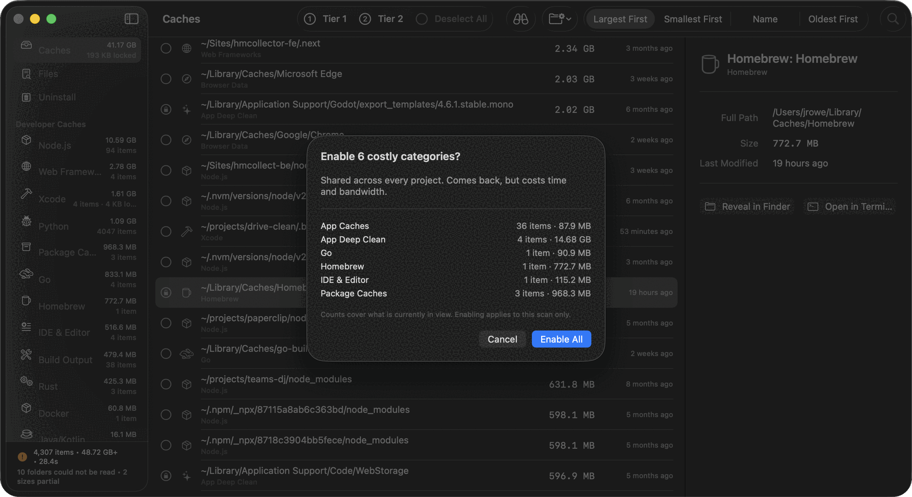

Your Mac is holding gigabytes of things it can rebuild or fetch again.
Xcode's derived data. Every node_modules in every project you touched this year. Docker layers, Go build output, Rust targets, Homebrew's downloads, pip wheels, and the Node versions you installed once and rarely used again. DDCC finds them, names the tool that made each one, and tells you whether getting it back means seconds, a slow rebuild, or another download.
- 3,945 items · 23.4s
- 10 folders could not be read
- 2 sizes partial

Old toolchain versions can add up quietly.
Version managers keep old installs around. Nine Node versions were installed on this machine over four years; one of them is running. The other eight are 2.77 GB of interpreter, plus every global package each of them collected. DDCC offers the inactive versions and keeps anything still referenced.
| Version | Status | Size |
|---|---|---|
| v24.13.0 | Retained: 20 live processes | — |
| v22.22.2 | Retained: named by an alias chain | — |
| v22.12.0 | Offered | 1.5 GB |
| v20.13.1 | Offered | 188 MB |
| v18.16.0 … v21.6.0 | Offered | 1.08 GB |
The newest version is kept
default usually means "latest installed" rather than a version number, and the current version is the safest baseline.
Alias chains are followed
default → lts/* → lts/krypton → v22.22.2 is a real chain. Whatever it lands on is kept, and a self-referencing alias cannot loop.
Anything running is kept
The same rule the uninstaller applies to a live app. It is what saved the current version twice over on the machine above.
Versions sort numerically
Text sorting puts v20.9.0 above v20.13.1. Numeric sorting keeps the active version from being mistaken for an older one.
Costly categories start locked.
A build cache costs you one slow rebuild. A Simulator runtime costs a six-gigabyte download. DDCC groups results by recovery cost, so expensive categories stay locked until you review the sheet and unlock them for the current scan.

Twenty-two categories, and it says which is which.
Every result carries the tool that produced it and a tier saying how cautious to be. That pairing matters because size alone does not tell you how expensive recovery will be.
Rebuilt on demand
Build output, derived data, compiler caches. Gone in seconds, back the next time you build.
Comes back, slowly
Package caches, Homebrew downloads, Docker layers. Free to lose, expensive in time and bandwidth.
Does not come back
Anything holding state you cannot regenerate. Locked, opted in one item at a time, and the only tier that makes you type the word before anything moves.